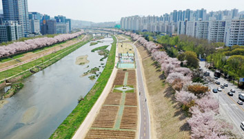
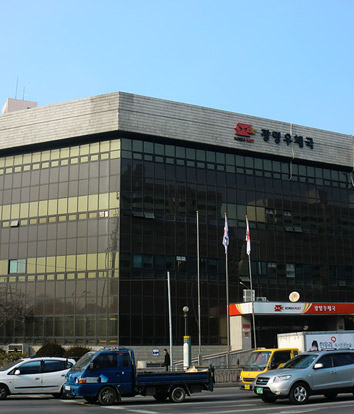
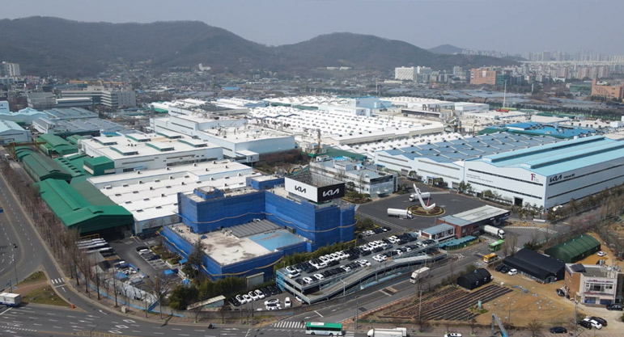

경기도 광명은 서울과 가까운 경기도의 한 도시로만 알려져 있습니다.
하지만, 자세히 들여다보면 다양한 매력이 있는 광명인데요.
알면 알수록 더 매력적인 광명을 동, 서, 남, 북 나누어 자세히 파헤쳐 보겠습니다.
경기도 광명은 서울과 가까운 경기도의 한 도시로만 알려져 있습니다.
하지만, 자세히 들여다보면 다양한 매력이 있는 광명인데요.
알면 알수록 더 매력적인 광명을 동, 서, 남, 북 나누어 자세히 파헤쳐 보겠습니다.
광명 꽃밭 안양천에서 자연경관 누려요
벚꽃 명소하면 떠오르는 곳들이 있죠. 안양천도 그 중 하나로 꼽을 수 있습니다. 안양천은 경기도 의왕시 청계산에서 발원하여 흐르다가 백운산에서 서쪽으로 흘러오는 왕곡천, 오전천과 합쳐져 군포시를 통과하는 하천입니다. 안양시에 이어 광명시와 서울특별시의 경계를 이루면서 북쪽으로 흐르다가 시흥시 수암면 목감리에서 발원하는 목감천과 만나 한강으로 흘러가죠.
안양천의 길이는 총 35.1km로 한강 지류 가운데 중랑천 다음으로 규모가 큰 하천이라는 점 알고 계셨나요? 안양천은 20여년 전만 해도 오염으로 악취가 심하고 정비도 되지 않아 주민들이 전혀 찾지 않는 버려진 하천이었는데요. 금천구와 광명시가 2004년부터 환경 개선 사업에 착수하면서 벚꽃은 물론 여러 자연경관을 누릴 수 있는 명소로 발돋움 하게 되었습니다.

<안양천은 중랑천 다음으로 규모가 큰 하천이다 사진: 광명시청>
또한 안양천에는 50종 이상의 조류를 비롯해서 다양한 생물들이 서식한다고 하는데요. 겨울에는 오리나 백로 등 철새들이 찾아오고, 물 속에는 잉어가 보이는 등 잘 보존된 생태를 보여주고 있습니다.

<사진: 광명시청>
구로차량기지 이전 계획에 따라 광명우체국 주변 지하철 역 신설이 기대되고 있다.

<소하1동에 위치한 기아자동차 소하리공장 사진 : doopedia>
안양천 품은 하안동∙소하동, 생활여건도 탁월해
안양천 풍경을 가장 가까이서 누릴 수 있는 곳은 어디일까요? 아마 광명시 동(東)쪽에 위치한 하안동과 소하동을 꼽을 수 있겠습니다.
하안동과 소하동은 안양천을 사이에 두고 금천구 독산동과 시흥동을 마주보고 있죠. 그만큼 서울 생활권을 누리면서 안양천으로 그린 인프라도 누릴 수 있는 수준 높은 주거 환경을 갖춘 단지로 볼 수 있습니다.
하안동부터 알아볼까요? 하안동은 4개의 동으로 나뉘며, 1980년대 후반~1990년대 초반에 대단위 아파트 단지로 개발됐습니다. 그만큼 잘 정돈된 주거 환경을 자랑하고 있으며, 1km 거리 내로 지하철 1호선 독산역을 이용할 수 있죠.
하안동의 중심부인 하안사거리는 지하철역이 없음에도 큰 규모의 번화가 상권을 형성하고 있습니다. 더불어 광명우체국이 위치해 있으며 주변으로 여러 지식산업센터가 들어서면서 이전보다 더 상권이 활성화될 것으로 기대를 모으고 있죠.
소하동으로 넘어가볼까요? 행정구역상 소하동은 소하1동과 소하2동으로 나뉩니다. 2000년대 후반까지만 해도 북쪽의 광명동, 철산동, 하안동에 비하면 전체적으로 개발이 덜 된 편이었지만, 2010년대 들어 본격적으로 택지 개발이 시작되면서 고층 아파트 및 상업 시설도 다수 들어서고 인구도 많이 늘었죠.
국내 자동차 산업의 요람으로 꼽히는 기아자동차 소하리공장도 소하1동에 위치해 있습니다. 기아자동차 소하리공장은 광명시의 산업과 경제를 이끌어 가는 핵심 기업으로서 광명시와는 떼려야 뗄 수 없는 가족 같은 기업이라는 이야기도 들립니다.
탄탄한 인프라에 미래 가치 높아… 구름산지구 개발도 기대
최근 광명시가 광명뉴타운과 철산주공 일대를 중심으로 변화를 예고하고 있는데요. 하안동과 소하동도 이를 따라 새로운 주거 단지로 탈바꿈을 준비하고 있습니다.
먼저 하안동은 9만6000㎡에 달하는 부지를 2030년까지 총 1900여 가구 규모의 아파트 단지를 공급합니다. 이 사업은 경기주택도시공사가 주관하는 공공재개발로 이뤄질 예정인데요. 그만큼 빠른 사업시행과 인프라 안착이 기대됩니다.
또한 몇 년 전부터 서울시 구로구에 위치한 지하철차량기지를 광명시 노온사동 일대로 이전한다는 계획이 거론되면서 역 신설에 대한 기대감도 높은데요. 지하철 1호선과 7호선이 연장되면서 광명우체국 주변 우체국사거리역이라는 이름으로 새로운 역사가 지어질 가능성도 높은 상태입니다.
소하동은 지난 2021년부터 광명시와 경기주택도시공사간 협력으로 원도심 균형발전 계획의 한 축을 담당하고 있습니다. 그 중 하나로 구름산 도시개발지구를 들 수 있죠. 구름산도시개발지구는 광명시 소하동 104-9번지 일원 77만 2855㎡ 규모 면적에 2025년까지 5096가구를 공급하는 개발사업입니다. 구름산 도시개발지구가 자리를 잡으면 구로차량기지 이전으로 하안동과 함께 지하철 1호선 소하역 신설도 기대해볼 수 있습니다.
이처럼 하안동과 소하동이 포함된 광명시 동쪽은 안양천을 중심으로 한 그린 인프라, 풍부한 생활 인프라 등 다양한 인프라를 누릴 수 있는 우수한 주거 환경을 갖춘 곳으로 평가받고 있는데요. 높은 발전가능성과 미래가치를 지닌 만큼 광명뉴타운과 철산동 재개발∙재건축 이후 다음 개발의 주인공으로 기대를 모으고 있습니다.